Da estatística à narrativa: projetando com IA para o Tempo Real do ge
Do discovery à entrega: como levar a história de jogadores, clubes e confrontos para quem acompanha o jogo ao vivo no ge, sem tirar a atenção do lance.
Três cards para o Tempo Real
Dados históricos em dois momentos da partida: o craque e o duelo no pré-jogo, e uma curiosidade gerada por IA logo depois do lance.
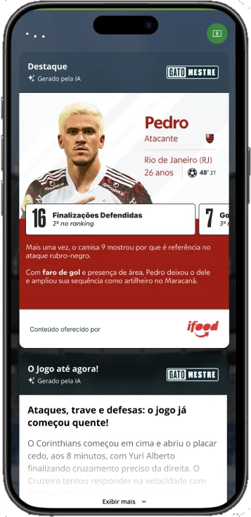
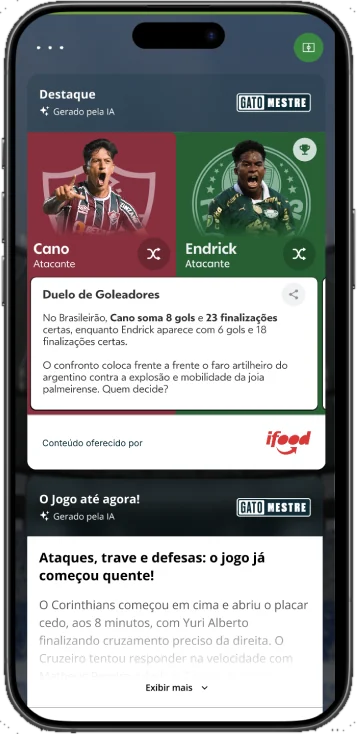
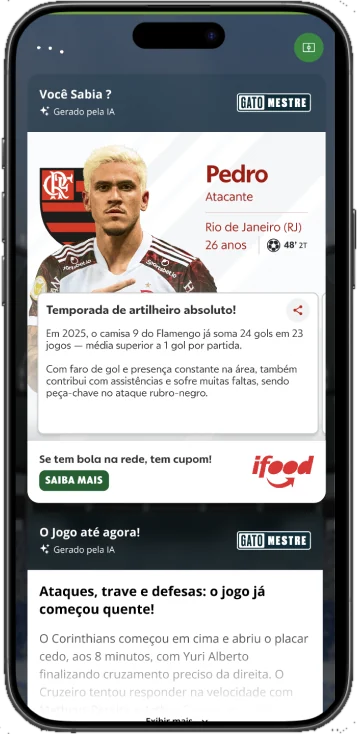
01 · Contexto
O jogo ao vivo, sem a história por trás
O Tempo Real (TR) é onde o torcedor acompanha a partida lance a lance no ge, pelo site e pelo app: placar, lances, narração e estatísticas, tudo acontecendo ao mesmo tempo. Os números aparecem soltos, sem a história de jogadores, clubes e confrontos que existe por trás deles.
Meu papel: como UX Designer Sênior, entrei na fase de proposta e entrega. Levei o Card de atleta e o Você sabia? da definição ao handoff: estrutura dos cards, estados e variações, fluxo da IA, regras, copy, testes de usabilidade e alinhamento com o editorial.
02 · Problema
Como dar contexto sem tirar o torcedor do jogo?
O projeto começou com um discovery para entender e propor como exibir ao usuário uma visão histórica de jogadores, clubes e confrontos dentro do TR, um lugar onde a atenção já é disputada lance a lance.
- Contexto na tela: exibir dados históricos de jogadores, clubes e confrontos durante o tempo real.
- Sem sair do jogo: ajudar o usuário a entender a partida sem trocar de página.
- Fonte confiável: reforçar o ge como referência em informação esportiva.
Objetivo: aumentar o engajamento e o tempo médio de consumo no TR.
Hipótese: se mostrarmos curiosidades e dados contextuais durante o jogo, o engajamento e o tempo de leitura aumentam.
03 · Processo
De mais de 40 ideias a 3 cards
O tema já tinha sido levantado outras vezes. Por isso, o primeiro passo foi juntar o que já existia e transformar em algo claro, antes de propor qualquer tela.
- Levantamento colaborativo: estudos e projetos anteriores, e conversas com quem já tinha trabalhado em demandas parecidas.
- Benchmarking de produtos de dados e estatísticas esportivas.
- Perfis de usuário: casual, engajado e apostador, cada um com uma relação diferente com os dados.
- Mapeamento de cards: mais de 40 ideias com dados históricos, pensadas em conteúdo e em visual.
- Priorização com o time: brainstorm, votação e matriz de impacto x esforço.
40+
ideias de cards com dados históricos
3
cards priorizados para o TR
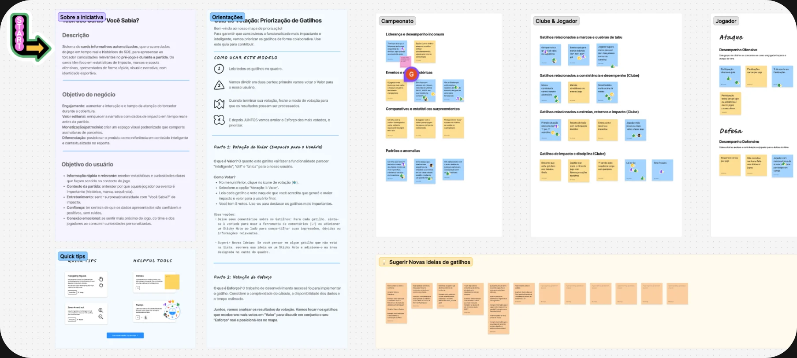
04 · Solução
Três cards para dar contexto à partida
Cada card usa os dados históricos de um jeito próprio: dois preparam o torcedor no pré-jogo, e um aparece logo depois do lance.
Card de atleta · o craque do jogo
Coloca em evidência o jogador mais decisivo, com critérios objetivos como gols, assistências, desarmes e finalizações certas. Gera reconhecimento, cria identificação e ajuda a entender rápido quem se destacou, mesmo para quem não acompanhou o jogo inteiro.
Quando aparece: no pré-jogo, com o desempenho estatístico do atleta em destaque do confronto na temporada. O card entra no feed do TR numa posição dinâmica, junto com os outros conteúdos da partida.
- Scouts por posição: cada posição mostra os números que mais explicam a performance, de defesas difíceis no goleiro a precisão de finalização no atacante.
- Cor do clube: selo, contorno e números seguem a cor do time, testada com os 20 clubes da Série A 2025.
- Posições por extenso, no padrão do ge, para quem não conhece as siglas.
- Regras de número: milhares abreviados (1,2k), porcentagens inteiras e dois dígitos abaixo de 10.
- Trilho de cards: swipe no mobile, setas no desktop e espaço para patrocínio.
- Sem foto do atleta, o card mostra só o escudo do time.
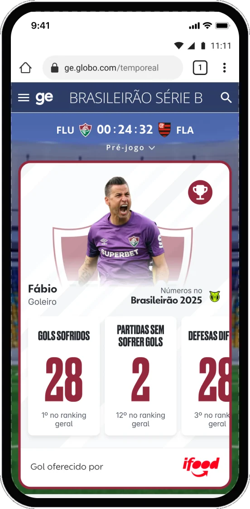
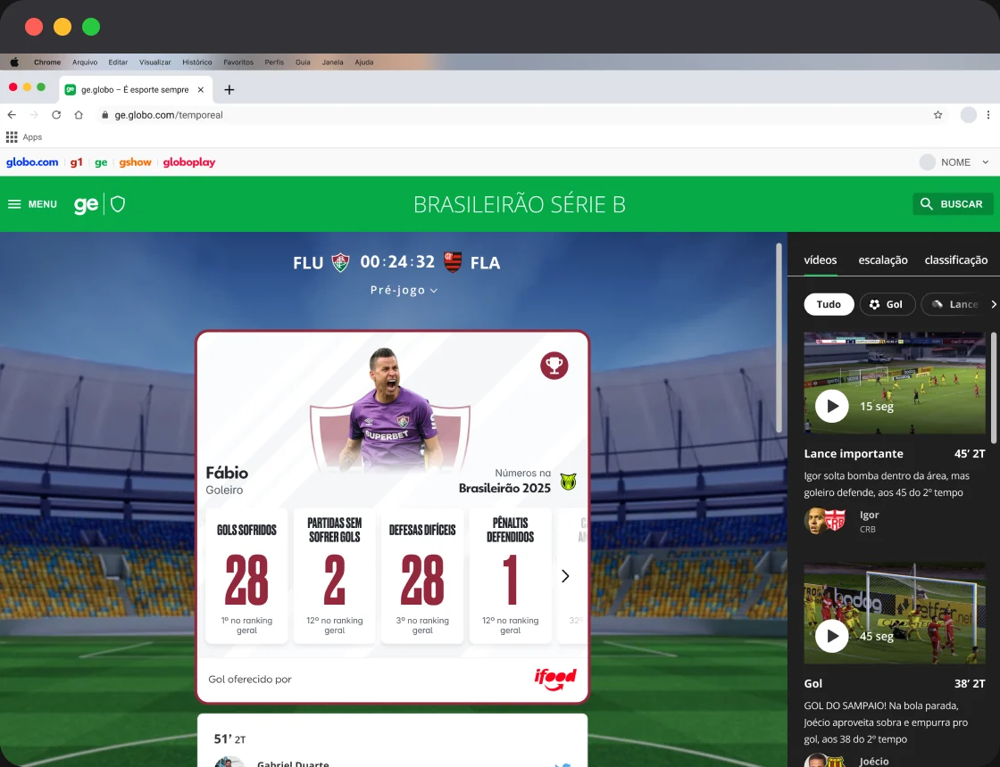
Handoff do Card de atleta
Cor do clube
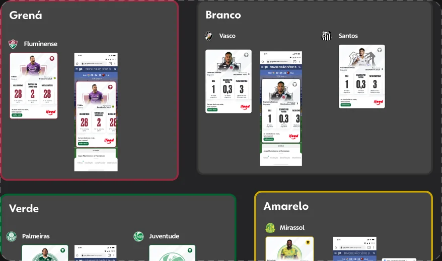
Selo, contorno e números seguem a cor do time do atleta. Testado com os 20 clubes da Série A 2025.
Breakpoints
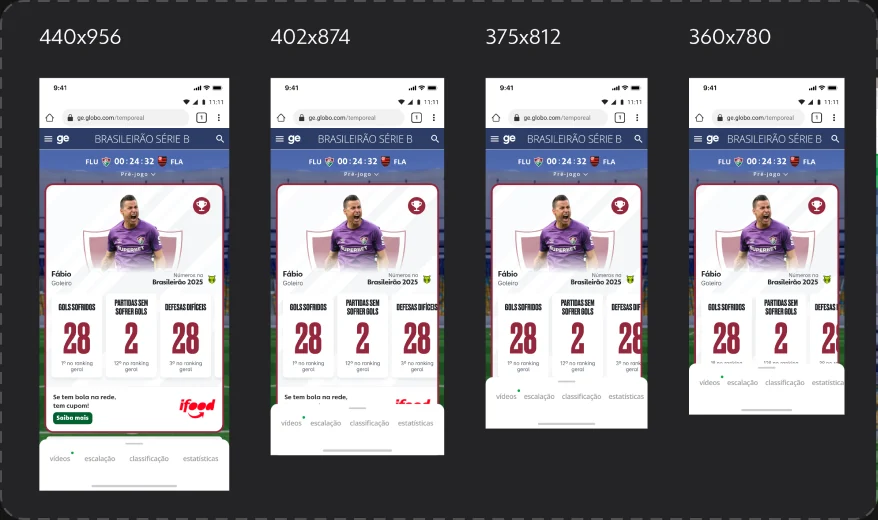
Largura fluida no mobile, de acordo com o viewport, e fixa em 560px no desktop. Swipe no mobile e setas no desktop.
Scouts por posição
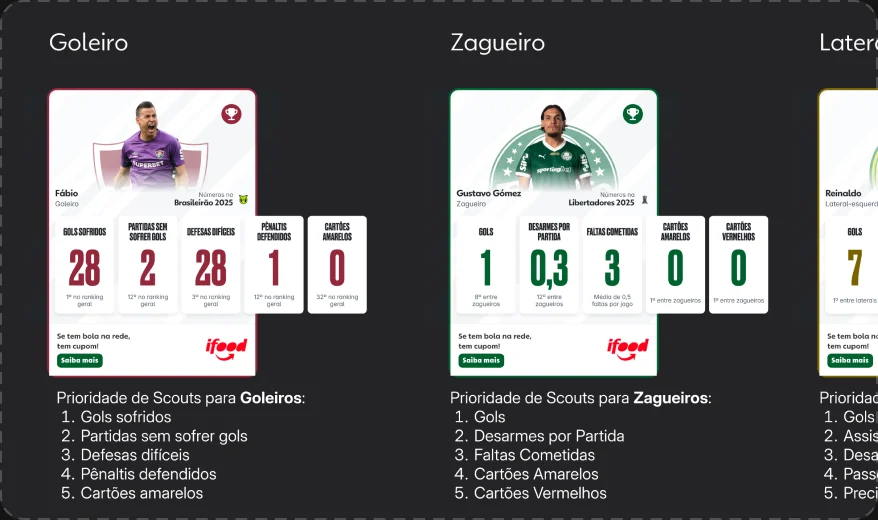
Cada posição tem cinco scouts prioritários. Goleiro: gols sofridos, jogos sem sofrer gols, defesas difíceis. Atacante: gols, precisão de finalização, assistências.
Regras de exibição
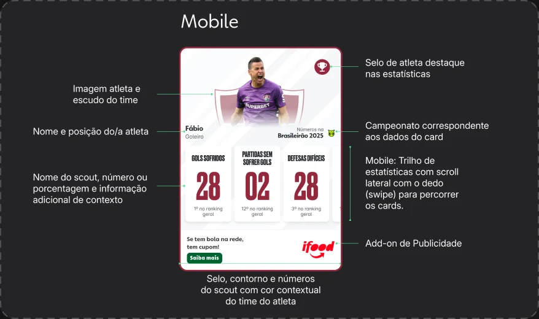
1.234 vira 1,2k. Porcentagem sempre inteira. 01 a 09 abaixo de 10. Sem foto do atleta, aparece só o escudo do time.
Head-to-head · pré-jogo
Card voltado para o pré-jogo. Compara os dois times ou atletas que vão se enfrentar, com o histórico recente de confrontos diretos, aproveitamento, sequências de vitórias ou derrotas e outros dados que criam expectativa. Ajuda o torcedor a se contextualizar e a fazer uma leitura mais estratégica do jogo que está por vir.
Status: a proposta foi desenhada, mas não foi priorizada para desenvolvimento nesta etapa.
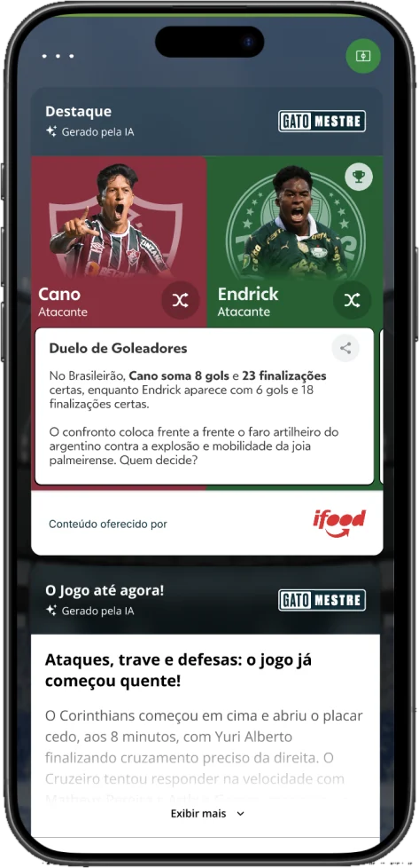
Você sabia? · durante o jogo
Entra como um respiro de curiosidade e informação. Com linguagem leve, traz dados históricos, padrões ou fatos inusitados sobre o time, o jogador ou o lance que acabou de acontecer. Por trás, a IA analisa em tempo real os dados estatísticos e de contexto da partida e transforma números em pequenas pílulas de conhecimento. O desafio era escolher a história certa para o momento certo.
Você sabia? · Processo
Como a IA monta a curiosidade
Defini o fluxo em quatro passos, do evento em campo ao texto que chega ao torcedor.
1º passo
Gatilho
Um evento acontece no jogo
2º passo
Entidade
IA identifica o personagem
3º passo
Curiosidade
Busca uma curiosidade
4º passo
Insight
Gera um insight para o usuário
Do dado à curiosidade. Um exemplo de como a IA montaria o Você sabia?: parte de um número da partida, identifica quem está por trás dele e entrega uma frase curta para o torcedor.
Você sabia? · Processo
Um exemplo: do dado à curiosidade
01
O dado
Um gatilho acontece na partida.
15 gols
Prova da importância do jogador na temporada.
02
O personagem
A IA identifica quem está por trás do número.
Kaio Jorge
#19 · Centroavante · Cruzeiro · 23 anos
03
A curiosidade
Busca o contexto e escreve uma frase curta.
✚ Kaio Jorge atinge a marca de 15 gols na temporada
“Você sabia que Kaio Jorge marcou 15 vezes em 16 jogos, desempenho que o coloca como um dos mais regulares na artilharia nesta temporada?”
- Três formatos: curiosidade sobre o jogador (foto e escudo), sobre o time (escudo) e sobre o confronto (os dois escudos).
- Duas camadas de história: micro, com o desempenho na partida, e macro, com recordes, tabus e rivalidades.
- Selo “Gerado por IA” em toda curiosidade, para deixar a origem clara.
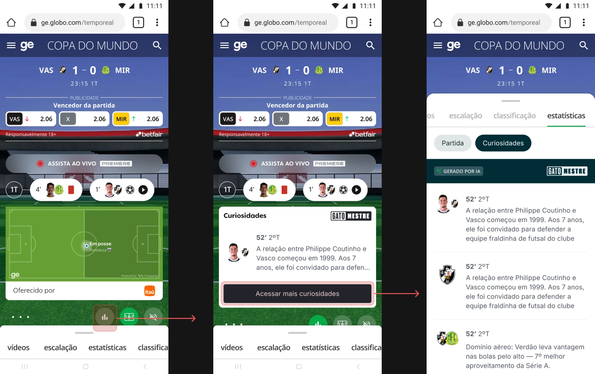
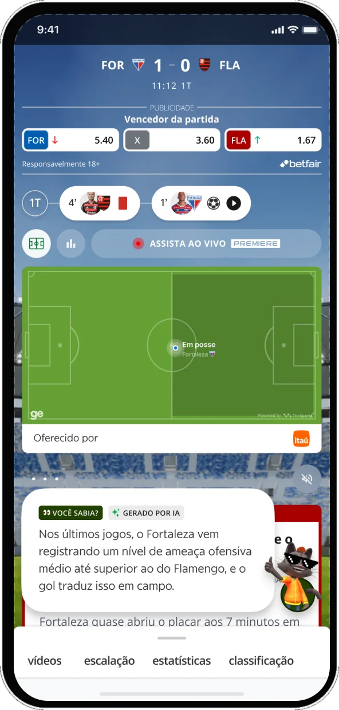
O que queríamos aprender com o teste
- Momento: depois do lance, na pausa do jogo ou num lance polêmico?
- Frequência: quantas curiosidades por partida?
- Formato: qual apresentação gera engajamento?
- Conteúdo: que tipo de curiosidade desperta interesse?
Como mediríamos: chegada ao componente e tempo na região, cliques na aba de estatísticas, alternância entre partida e curiosidades e cliques na foto ou no nome do jogador.
05 · Resultados
Um card no ar, uma hipótese testada
No ar
Card de atleta, implementado e lançado no TR
Testado
Você sabia?, validado no lab antes do desenvolvimento
No teste de usabilidade, o Você sabia? não despertou interesse durante a partida: a atenção estava no lance, e a curiosidade não gerou engajamento naquele momento. Por isso, não seguiu para o desenvolvimento, e o time evitou investir engenharia em algo sem demanda.
Head-to-head: ficou na fase de proposta, então não há resultado de uso para medir.
06 · Aprendizados
O que levo deste projeto
- O momento importa tanto quanto o conteúdo. Uma informação interessante perde valor se aparece no meio do lance.
- Testar antes de construir. O lab respondeu cedo à pergunta mais cara do projeto.
- Regras deixam o card escalável. Scouts por posição, cores dos clubes e formatos de curiosidade fazem o mesmo componente servir para qualquer jogo.
07 · Próximos passos
Próximos passos
01
Novos momentos para o Você sabia?
Levar a curiosidade para o pré-jogo e o pós-jogo, quando a atenção do torcedor não está no lance.
02
Fora do feed do TR
Testar o Você sabia? em outras áreas da jornada do ge, fora do feed do Tempo Real.
Próximo projeto
GloboPop · Agora ninguém mais perde o próximo capítulo
From stats to story: designing with AI for ge’s live coverage
From discovery to delivery: how to bring the story of players, clubs and matchups to people following the match live on ge, without taking their attention off the play.
Three cards for Live coverage
Historical data at two moments of the match: the standout player and the matchup before kickoff, and an AI-generated fact right after a play.
01 · Context
The live match, without the story behind it
Tempo Real (TR, the live coverage) is where fans follow a match play by play on ge, on the website and in the app: score, plays, commentary and stats, all happening at once. The numbers show up on their own, without the story of the players, clubs and matchups behind them.
My role: as a Senior UX Designer, I joined at the proposal and delivery stage. I took the Athlete card and Did you know? from definition to handoff: card structure, states and variations, the AI flow, rules, copy, usability tests and alignment with the editorial team.
02 · Problem
How do you add context without pulling fans out of the match?
The project started with a discovery phase to understand and propose how to show users a historical view of players, clubs and matchups inside TR, a place where attention is already fought over play by play.
- Context on screen: show historical data on players, clubs and matchups during the live coverage.
- Without leaving the match: help users understand the game without switching pages.
- Trusted source: reinforce ge as the reference for sports information.
Goal: increase engagement and average time spent in TR.
Hypothesis: if we show fun facts and contextual data during the match, engagement and reading time go up.
03 · Process
From more than 40 ideas to 3 cards
The topic had come up before. So the first step was to gather what already existed and turn it into something clear, before proposing any screen.
- Collaborative review: earlier studies and projects, plus conversations with people who had worked on similar requests.
- Benchmarking of sports data and stats products.
- User profiles: casual, engaged and bettor, each with a different relationship with data.
- Card mapping: more than 40 ideas using historical data, thought through in content and visuals.
- Prioritization with the team: brainstorm, voting and an impact x effort matrix.
40+
card ideas using historical data
3
cards prioritized for TR
04 · Solution
Three cards to add context to the match
Each card uses historical data in its own way: two get fans ready before kickoff, and one shows up right after a play.
Athlete card · the player of the match
It highlights the most decisive player, using objective criteria such as goals, assists, tackles and shots on target. It creates recognition and connection, and helps fans quickly see who stood out, even if they did not watch the whole match.
When it shows up: before kickoff, with the season stats of the standout player in the matchup. The card enters the TR feed in a dynamic position, alongside the other match content.
- Stats by position: each position shows the numbers that best explain performance, from difficult saves for goalkeepers to shot accuracy for forwards.
- Club color: badge, outline and numbers follow the team color, tested with the 20 clubs of the 2025 Série A.
- Positions spelled out, following ge’s standard, for people who do not know the abbreviations.
- Number rules: thousands abbreviated (1.2k), whole percentages and two digits below 10.
- Card rail: swipe on mobile, arrows on desktop and room for sponsorship.
- Without a player photo, the card shows only the team crest.
Athlete card handoff
Club color
Badge, outline and numbers follow the color of the player’s team. Tested with the 20 clubs of the 2025 Série A.
Breakpoints
Fluid width on mobile, following the viewport, and fixed at 560px on desktop. Swipe on mobile and arrows on desktop.
Stats by position
Each position has five priority stats. Goalkeeper: goals conceded, clean sheets, difficult saves. Forward: goals, shot accuracy, assists.
Display rules
1,234 becomes 1.2k. Percentages are always whole numbers. 01 to 09 below 10. Without a player photo, only the team crest shows.
Head-to-head · pre-match
A pre-match card. It compares the two teams or players about to face each other, with recent head-to-head history, win rate, winning or losing streaks and other data that builds anticipation. It helps fans get context and read the upcoming match more strategically.
Status: the proposal was designed, but it was not prioritized for development at this stage.
Did you know? · during the match
It works as a breather of curiosity and information. In a light tone, it brings historical data, patterns or unusual facts about the team, the player or the play that just happened. Behind it, AI analyzes the match’s stats and context in real time and turns numbers into small bites of knowledge. The challenge was picking the right story for the right moment.
Did you know? · Process
How the AI builds the fun fact
I defined the flow in four steps, from the event on the pitch to the text that reaches the fan.
Step 1
Trigger
Something happens in the match
Step 2
Entity
AI identifies who is involved
Step 3
Fun fact
Looks up a fun fact
Step 4
Insight
Creates an insight for the user
From data to fun fact. An example of how the AI would build a Did you know?: it starts from a match number, identifies who is behind it and delivers a short sentence to the fan.
Did you know? · Process
An example: from data to fun fact
01
The data
A trigger happens in the match.
15 goals
Proof of the player’s importance this season.
02
The person
The AI identifies who is behind the number.
Kaio Jorge
#19 · Striker · Cruzeiro · 23 years old
03
The fun fact
Finds the context and writes a short sentence.
✚ Kaio Jorge reaches 15 goals this season
“Did you know Kaio Jorge has scored 15 times in 16 games, a record that makes him one of the most consistent scorers this season?”
- Three formats: a fun fact about the player (photo and crest), the team (crest) or the matchup (both crests).
- Two story layers: micro, with performance in the match, and macro, with records, long streaks and rivalries.
- “AI-generated” label on every fun fact, to make the source clear.
What we wanted to learn from the test
- Timing: after a play, during a break or after a controversial play?
- Frequency: how many fun facts per match?
- Format: which presentation drives engagement?
- Content: what kind of fun fact sparks interest?
How we would measure it: reaching the component and time spent there, clicks on the stats tab, switching between the match and the fun facts, and clicks on the player’s photo or name.
05 · Results
One card live, one hypothesis tested
Live
Athlete card, built and launched in TR
Tested
Did you know?, validated in the lab before development
In the usability test, Did you know? did not spark interest during the match: attention was on the play, and the fun fact did not drive engagement at that moment. So it did not move on to development, and the team avoided spending engineering effort on something without demand.
Head-to-head: it stayed at the proposal stage, so there are no usage results to measure.
06 · Learnings
What I take from this project
- Timing matters as much as content. Interesting information loses value if it shows up in the middle of a play.
- Test before you build. The lab answered the project’s most expensive question early.
- Rules make the card scalable. Stats by position, club colors and fun-fact formats let the same component work for any match.
07 · Next steps
Next steps
01
New moments for Did you know?
Bring the fun fact to pre-match and post-match, when fans are not focused on the play.
02
Outside the TR feed
Test Did you know? in other areas of the ge journey, outside the live coverage feed.
Next project
GloboPop · Now no one misses the next episode